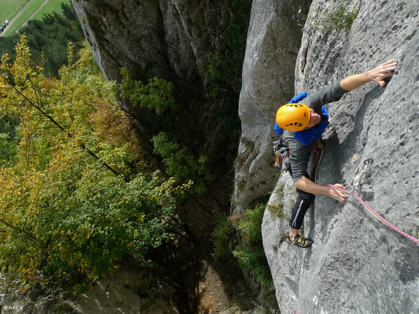

A hegymászás vagy alpinizmus a magashegységi övezetben emelkedő hegycsúcsok megmászására irányuló szabadidős vagy sporttevékenység. Története hajnalán, a 18–19. században az alpinizmus a tűrő- és állóképességük határait megismerni vágyó kevesek nem mindennapi erőpróbájának számított. Nemritkán tudományos kutatással kötötték össze a hegycsúcsok meghódítását. Napjainkra szélesebb tömegek sporttevékenysége, amely kiváló erőnlétet és speciális felszerelést kíván meg e szenvedély hódolóitól.
